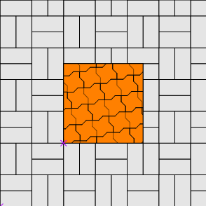
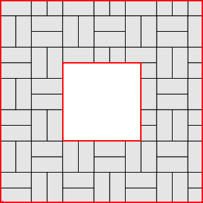
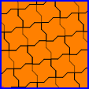
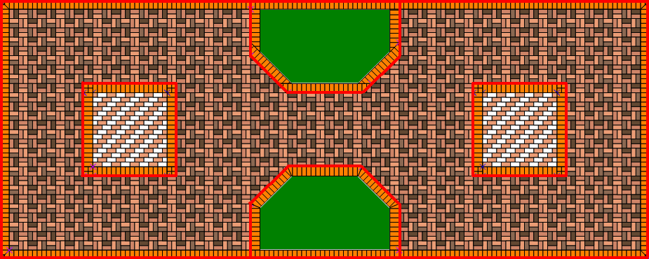
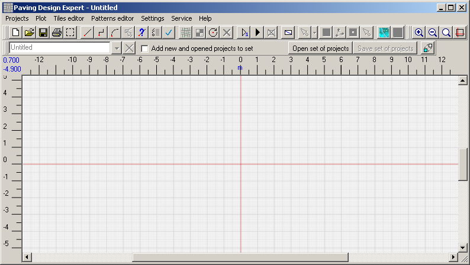
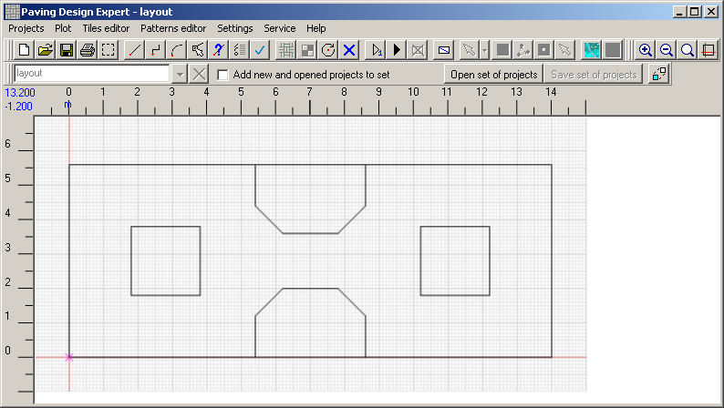
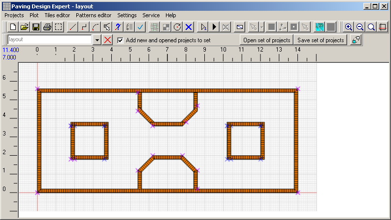
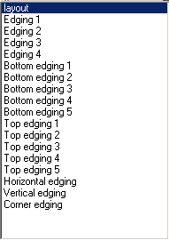
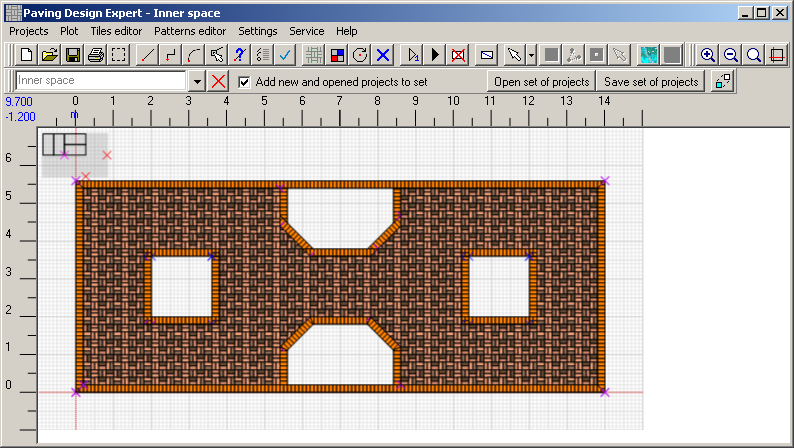
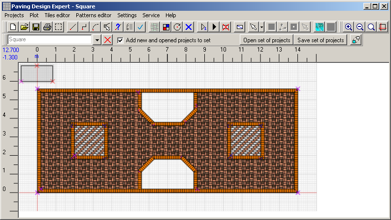

Paving Design Expert 2.2
Several projects in one drawing
In version 2.2, several projects can be placed in the same drawing. These conventional projects
are completely independent from each other, each of them has its own circuit and pattern.
The only thing uniting them - is that they are placed in a single drawing. Of course, each of them
can be opened and edited separately from the others.
Suppose you need to draw the next working draft:
There are TWO projects.
This means you need to draw in the one project ALL the borders of the outer square (marked in red),
and in other project - ALL internal borders (blue).
All projects placed in the drawing are combined into a set. In a set you can switch between the projects. Currently selected project becomes active. You can edit it. Other projects are unavailable for editing at this time.
Look at our example. As far as the drawing can place several projects, when drawing complex work projects you can create one basic project that will serve as basis for drawing the remaining projects. In our case the basic design can be like this:
First of all you should establish comfortable drawing dimensions. Further in the examples scale is set in "1".
Begin to draw. Click the New button on the toolbar.
A new project "Untitled" is created in the Project Editor.
It is added to the set of projects that consists only of this one:
button on the toolbar.
A new project "Untitled" is created in the Project Editor.
It is added to the set of projects that consists only of this one:
Note that other buttons become available in the toolbar. Draw a basic design. Drawing is described in details in the manual. In version 2.2, you can also draw with help of the dialogue. Save the base project called "layout".
Now according the layout we will create outer borders edgings of the working draft, squares and lawns. Each line of the edging - is a separate project, which is added to a set of projects on creation. Working draft with edgings looks like this:
And here is how a set of projects looks like:
Now it's time to fill in the working draft with tiles. Taking into account the beginning of this chapter about projects borders, draw the inner space project and fill it with tiles. Working with multiple projects in a single drawing you need to closely monitor which of the project is now active. There is a risk to start drawing in the wrong project. So, we created the edgings in the project "layout". If you do not create a new project for the inner space, then you can easily start drawing right in "layout". That’s why,
You also need to save a set of projects after completing the current project. Imagine that after creating the border we saved a set of projects under the name "Lesson 1". Then we drew a project "inner space", as shown above. After that we decided to make a break in a work and closed the program. When you need to continue your work on the detailed design, just open a set of projects. Click "Open set" and select the file "Lesson 1". Get layout with borders, but without an inner space. The matter is we forgot to save a set after adding "inner space" before:
It is easy to fix. Select "New and open projects add to the set" and just open the project "inner space." Now everything looks good.
Now we need to save the set - we just added the project "inner space" to it. Next time everything will be opened together.
Create a project to fill the squares. Draw squares.
So, working on multiple projects in a single drawing you must adhere to the following procedure:
Proceed to the working project final processing.
Suppose you need to draw the next working draft:

There are TWO projects.
|  |  |
| First - outer square | Second - internal |
All projects placed in the drawing are combined into a set. In a set you can switch between the projects. Currently selected project becomes active. You can edit it. Other projects are unavailable for editing at this time.
Look at our example. As far as the drawing can place several projects, when drawing complex work projects you can create one basic project that will serve as basis for drawing the remaining projects. In our case the basic design can be like this:

First of all you should establish comfortable drawing dimensions. Further in the examples scale is set in "1".
Begin to draw. Click the New
button on the toolbar.
A new project "Untitled" is created in the Project Editor.
It is added to the set of projects that consists only of this one:

Note that other buttons become available in the toolbar. Draw a basic design. Drawing is described in details in the manual. In version 2.2, you can also draw with help of the dialogue. Save the base project called "layout".

Now according the layout we will create outer borders edgings of the working draft, squares and lawns. Each line of the edging - is a separate project, which is added to a set of projects on creation. Working draft with edgings looks like this:

And here is how a set of projects looks like:

Now it's time to fill in the working draft with tiles. Taking into account the beginning of this chapter about projects borders, draw the inner space project and fill it with tiles. Working with multiple projects in a single drawing you need to closely monitor which of the project is now active. There is a risk to start drawing in the wrong project. So, we created the edgings in the project "layout". If you do not create a new project for the inner space, then you can easily start drawing right in "layout". That’s why,
do not forget to create new projects for the individual parts of a working project!

You also need to save a set of projects after completing the current project. Imagine that after creating the border we saved a set of projects under the name "Lesson 1". Then we drew a project "inner space", as shown above. After that we decided to make a break in a work and closed the program. When you need to continue your work on the detailed design, just open a set of projects. Click "Open set" and select the file "Lesson 1". Get layout with borders, but without an inner space. The matter is we forgot to save a set after adding "inner space" before:
It is easy to fix. Select "New and open projects add to the set" and just open the project "inner space." Now everything looks good.
Now we need to save the set - we just added the project "inner space" to it. Next time everything will be opened together.
Create a project to fill the squares. Draw squares.

Again, save the set.So, working on multiple projects in a single drawing you must adhere to the following procedure:
- Create a new project
- Draw the project
- Save the project
- Save a set of projects
- Before you change the project make sure that active project is that you are going to change.
Proceed to the working project final processing.